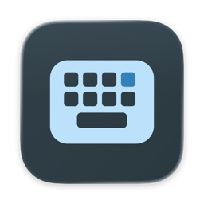
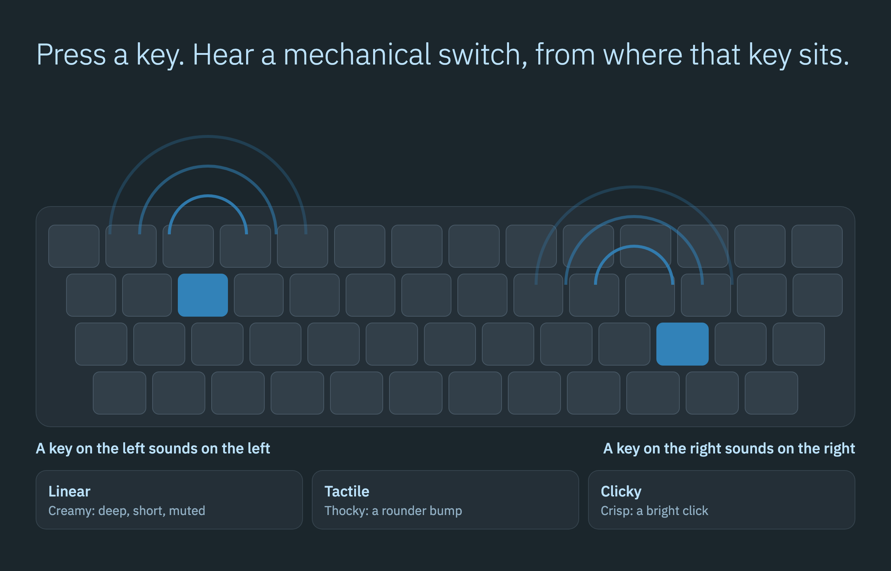

Three switch profiles
Linear, Tactile and Clicky, cut from lossless recordings.

Real mechanical keyboard sounds for every key you press, placed in 3D where each key sits on your keyboard.

A recorded press when a key goes down and a release when it comes back up, in every app. Every key rings on its own, and they overlap the way they do on a real board.
Linear, Tactile and Clicky, cut from lossless recordings.
Every key sounds from its own place on the keyboard, and head tracking follows you on supported AirPods.
Speed changes the touch, big keys have a stabilizer rattle, and a held key stays silent.
About 3 ms from the key event to the sound leaving Switchtone.
After a minute without a key the audio output pauses and the Mac can sleep.
Every sound is skipped while macOS secure keyboard entry is on.
Free and open source, for macOS 26 or later on Apple silicon.
curl -fsSL https://raw.githubusercontent.com/gabrimatic/switchtone/main/install.sh | bashIt checks the download's SHA-256 before it installs anything. Or download the disk image and see First Open: release builds are signed ad hoc, not notarized.
Switchtone reads which key went down or up, never the characters. It has no network access, stores no typing data and needs one permission: Input Monitoring.